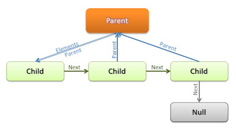

XML Parser in CFriday, July 27, 2012
The project started last year was required to the develop an XML parser with basic functionality as a part of large library that using XML as standard for all input/ouput configuration and data files. In case of stringent requirements to use only an ANSI C and no external libraries, I decided to develop the parser by myself.
This post is describe how it work - the XML parser loads an XML file in memory, parses the file and generates a tree structure representing the XML content. Of course, you can also parse XML data that you have already stored yourself into a memory buffer. Thereafter, you can easily going through the tree to work with data and modify it by adding new elements or removing existing. XML tree designed to minimize memory usage and simplify corresponding algorithms, that, unfortunately, made memory management a little complicated.
Top element in the tree is 'Parent', that links to the top of children elements stored in linked list, where last element is Null pointer. In this structure is very easy to traverse through element's tree by hand without using additional DOM or SAX parsers.
Corresponding code look as follows:
typedef struct _XMLDocument XMLDocument; typedef struct _XMLElement XMLElement; typedef struct _XMLAttribute XMLAttribute; struct _XMLDocument { XMLElement *elements; }; struct _XMLElement { wchar_t *name; wchar_t *value; XMLAttribute *attributes; /* the link to the parent element in the list */ XMLElement *parent; /* the link to the next child element in the list */ XMLElement *elements; /* the link to the next element in the list */ XMLElement *next; }; struct _XMLAttribute { wchar_t *name; wchar_t *value; /* the linke to the next element in the list */ XMLAttribute *next; };
The code reads an XML file is placed in separate file and implemented as loop that going through the XML file content and reads next character on each subsequent iteration. At the beginning XML reader initializes variable values and determines the length of provided XML file.
const size_t STRING_LENGTH = 256; const wchar_t *EMPTY_STRING = L""; XMLDocument *document = installer_xml_document_new(); XMLAttribute *attribute = NULL; XMLElement *element = NULL; XMLElement *element_t = NULL; /* temporaary element */ /* xml string to parse */ wchar_t *string = NULL; int index = 0; /* first level cursor */ wchar_t character = WEOF; wchar_t delim = WEOF; bool inside_flag = false; wchar_t *element_name = (wchar_t*) calloc(STRING_LENGTH, sizeof(wchar_t)); wchar_t *element_value = (wchar_t*) calloc(STRING_LENGTH, sizeof(wchar_t)); wchar_t *attribute_name = (wchar_t*) calloc(STRING_LENGTH, sizeof(wchar_t)); wchar_t *attribute_value= (wchar_t*) calloc(STRING_LENGTH, sizeof(wchar_t)); long file_length = 0; /* file length */ long character_number = 0; /* how much characters in file */ /* character_numner <= file_length */ /* function argument and variables are can't be NULL */ if ((reader == NULL) || (document == NULL) || (element_name == NULL) || (element_value == NULL) || (attribute_name == NULL) || (attribute_value == NULL)) { free(document); return NULL; } /* determines length of the xml file and reads this file into buffer */ fseek(reader->pointer, 0L, SEEK_END); file_length = ftell(reader->pointer); fseek(reader->pointer, 0L, SEEK_SET); string = (wchar_t*) calloc(file_length + 1, sizeof(wchar_t)); /* file is empty */ if ((file_length <= 0) || (string == NULL)) { return NULL; } /* add first element to the document */ element_t = installer_xml_element_new(L"XML DOCUMENT", L"v1.0"); element = installer_xml_document_add_element(document, element_t); installer_xml_element_delete(element_t); element_t = installer_xml_element_new(EMPTY_STRING, EMPTY_STRING); element = installer_xml_element_add_element(element, element_t); installer_xml_element_delete(element_t); /* fread(string, sizeof(wchar_t), 30, reader->pointer); */ character = fgetwc(reader->pointer); /* leave start point */ while (((character = fgetwc(reader->pointer)) != WEOF)) { string[character_number] = character; character_number++; }
The process of parsing XML content is implemented in the body of while loop where current content character is compares to XML tokens (for example, '<' and '>' symbols or sequence of symbols like '!--'). To simplify parsing algorithm I wrote external functions, like 'append_character' that append specified character to the existing string. There is also required to have an access to string elements located before and after current character, - and it's not a problem in this design by obtaining that values from allocated string.
/* main parser loop */ while (index < character_number) { character = string[index]; if ((character == NEW) || (character == TAB) || (character == RET)) { index++; continue; } if (character == OPEN) { /* comment section */ if ((string[index + 1] == EXCLAMATION) && (string[index + 2] == MINUS) && (string[index + 3] == MINUS)) { memset(attribute_value, 0, STRING_LENGTH * sizeof(wchar_t)); index += 4; character = string[index]; while (!((string[index] == MINUS) && (string[index + 1] == MINUS) && (string[index + 2] == CLOSE))) { _installer_xml_reader_append_character(attribute_name, character); character = string[++index]; } index += 3; /* * comments will not be added to xml structure */ continue; } /* closing tag for the last opened element */ memset(element_name, 0, STRING_LENGTH * sizeof(wchar_t)); if (string[index + 1] == SLASH) { /* element = element->parent */ element = installer_xml_element_get_parent(element); index++; while (string[index] != CLOSE) { index++; } index++; continue; } if (string[index + 1] == QM) { character = string[++index]; inside_flag = true; } /* create a new element */ character = string[++index]; while ((character != SLASH) && (character != SPACE) && (character != CLOSE)) { /* going until the element name has been entirely read */ if ((character != NEW) && (character != TAB) && (character != RET)) { _installer_xml_reader_append_character(element_name, character); } character = string[++index]; } /* element has been seted, going to the child element */ if (wcscmp(installer_xml_element_get_name(element), EMPTY_STRING) != 0) { /* element = element->child */ element_t = installer_xml_element_new(EMPTY_STRING, EMPTY_STRING); element = installer_xml_element_add_element(element, element_t); installer_xml_element_delete(element_t); } /* element->name = element_name */ installer_xml_element_set_name(element, element_name); while (character == SPACE) { character = string[++index]; if (character == SLASH) { break; } if ((character == QM) && (inside_flag == true)) { break; } memset(attribute_name, 0, STRING_LENGTH * sizeof(wchar_t)); memset(attribute_value, 0, STRING_LENGTH * sizeof(wchar_t)); /* going until the attribute name has been entirely read */ while (character != EQUAL) { if ((character != NEW) && (character != TAB) && (character != RET)) { _installer_xml_reader_append_character(attribute_name, character); } character = string[++index]; } character = string[++index]; if ((character == QUOTE) || (character == DQUOTE)) { delim = character; character = string[++index]; } /* going until the attribute value has been entirely read */ while ((character != delim) && (delim != WEOF)) { if ((character != NEW) && (character != TAB) && (character != RET)) { _installer_xml_reader_append_character(attribute_value, character); } character = string[++index]; } delim = WEOF; character = string[++index]; attribute = installer_xml_attribute_new(attribute_name, attribute_value); installer_xml_element_add_attribute(element, attribute); installer_xml_attribute_delete(attribute); } if (character == SLASH) { /* element = element->parent */ element = installer_xml_element_get_parent(element); character = string[++index]; while (character != CLOSE) { character = string[++index]; } } /* first xml element end <?xml version="1.0" encoding="UTF-8"?> */ if ((character == QM) && (inside_flag == true)) { /* element = element->parent - parent is NULL for the first element */ element = installer_xml_element_get_parent(element); character = string[++index]; inside_flag = false; while (character != CLOSE) { character = string[++index]; } } } /* element has a value */ if ((character != OPEN) && (character != CLOSE) && (character != SLASH) && (character != SPACE)) { memset(element_value, 0, STRING_LENGTH * sizeof(wchar_t)); while (character != OPEN) { if ((character != NEW) && (character != TAB) && (character != RET)) { _installer_xml_reader_append_character(element_value, character); } character = string[++index]; } /* element->value = element_value */ installer_xml_element_set_value(element, element_value); continue; } index++; }
The illustrated code does not meet the XML standard in its entirety, but it can be used to parse well-formatted XML data in non-critical part of your application. It's small, fast, and can be ported to any platform. You can obtain source code under MIT license from project website - http://code.google.com/p/installer-core/.